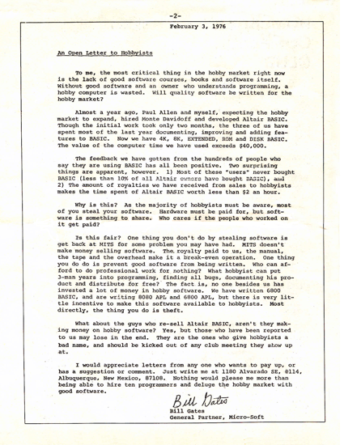

<!DOCTYPE html>


<html lang="en" >

  <head>
    <meta charset="utf-8" />
    <meta name="viewport" content="width=device-width, initial-scale=1.0" /><meta name="generator" content="Docutils 0.17.1: http://docutils.sourceforge.net/" />

    <title>Python Tesseract (pytesseract) Basic Example &#8212; Document Understanding eBook</title>
  
  
  
  <script data-cfasync="false">
    document.documentElement.dataset.mode = localStorage.getItem("mode") || "";
    document.documentElement.dataset.theme = localStorage.getItem("theme") || "light";
  </script>
  
  <!-- Loaded before other Sphinx assets -->
  <link href="../../../_static/styles/theme.css?digest=e353d410970836974a52" rel="stylesheet" />
<link href="../../../_static/styles/bootstrap.css?digest=e353d410970836974a52" rel="stylesheet" />
<link href="../../../_static/styles/pydata-sphinx-theme.css?digest=e353d410970836974a52" rel="stylesheet" />

  
  <link href="../../../_static/vendor/fontawesome/6.1.2/css/all.min.css?digest=e353d410970836974a52" rel="stylesheet" />
  <link rel="preload" as="font" type="font/woff2" crossorigin href="../../../_static/vendor/fontawesome/6.1.2/webfonts/fa-solid-900.woff2" />
<link rel="preload" as="font" type="font/woff2" crossorigin href="../../../_static/vendor/fontawesome/6.1.2/webfonts/fa-brands-400.woff2" />
<link rel="preload" as="font" type="font/woff2" crossorigin href="../../../_static/vendor/fontawesome/6.1.2/webfonts/fa-regular-400.woff2" />

    <link rel="stylesheet" type="text/css" href="../../../_static/pygments.css" />
    <link rel="stylesheet" href="../../../_static/styles/sphinx-book-theme.css?digest=14f4ca6b54d191a8c7657f6c759bf11a5fb86285" type="text/css" />
    <link rel="stylesheet" type="text/css" href="../../../_static/togglebutton.css" />
    <link rel="stylesheet" type="text/css" href="../../../_static/copybutton.css" />
    <link rel="stylesheet" type="text/css" href="../../../_static/mystnb.4510f1fc1dee50b3e5859aac5469c37c29e427902b24a333a5f9fcb2f0b3ac41.css" />
    <link rel="stylesheet" type="text/css" href="../../../_static/sphinx-thebe.css" />
    <link rel="stylesheet" type="text/css" href="../../../_static/design-style.4045f2051d55cab465a707391d5b2007.min.css" />
  
  <!-- Pre-loaded scripts that we'll load fully later -->
  <link rel="preload" as="script" href="../../../_static/scripts/bootstrap.js?digest=e353d410970836974a52" />
<link rel="preload" as="script" href="../../../_static/scripts/pydata-sphinx-theme.js?digest=e353d410970836974a52" />

    <script data-url_root="../../../" id="documentation_options" src="../../../_static/documentation_options.js"></script>
    <script src="../../../_static/jquery.js"></script>
    <script src="../../../_static/underscore.js"></script>
    <script src="../../../_static/_sphinx_javascript_frameworks_compat.js"></script>
    <script src="../../../_static/doctools.js"></script>
    <script src="../../../_static/clipboard.min.js"></script>
    <script src="../../../_static/copybutton.js"></script>
    <script src="../../../_static/scripts/sphinx-book-theme.js?digest=5a5c038af52cf7bc1a1ec88eea08e6366ee68824"></script>
    <script>let toggleHintShow = 'Click to show';</script>
    <script>let toggleHintHide = 'Click to hide';</script>
    <script>let toggleOpenOnPrint = 'true';</script>
    <script src="../../../_static/togglebutton.js"></script>
    <script>var togglebuttonSelector = '.toggle, .admonition.dropdown';</script>
    <script src="../../../_static/design-tabs.js"></script>
    <script>const THEBE_JS_URL = "https://unpkg.com/thebe@0.8.2/lib/index.js"
const thebe_selector = ".thebe,.cell"
const thebe_selector_input = "pre"
const thebe_selector_output = ".output, .cell_output"
</script>
    <script async="async" src="../../../_static/sphinx-thebe.js"></script>
    <script>DOCUMENTATION_OPTIONS.pagename = 'binder/ocr/tesseract/pytesseract_basic_example';</script>
    <link rel="canonical" href="https://horvay.dev/document-understanding-ebook/binder/ocr/tesseract/pytesseract_basic_example.html" />
    <link rel="shortcut icon" href="../../../_static/favicon.ico"/>
    <link rel="index" title="Index" href="../../../genindex.html" />
    <link rel="search" title="Search" href="../../../search.html" />
    <link rel="next" title="Python Tesseract (pytesseract) Languages Example" href="pytesseract_languages_example.html" />
    <link rel="prev" title="📔 Notebooks" href="../../../ocr/notebooks/index.html" />
  <meta name="viewport" content="width=device-width, initial-scale=1"/>
  <meta name="docsearch:language" content="en"/>
  </head>
  
  
  <body data-bs-spy="scroll" data-bs-target=".bd-toc-nav" data-offset="180" data-bs-root-margin="0px 0px -60%" data-default-mode="">

  
  
  <a class="skip-link" href="#main-content">Skip to main content</a>
  
  <input type="checkbox"
          class="sidebar-toggle"
          name="__primary"
          id="__primary"/>
  <label class="overlay overlay-primary" for="__primary"></label>
  
  <input type="checkbox"
          class="sidebar-toggle"
          name="__secondary"
          id="__secondary"/>
  <label class="overlay overlay-secondary" for="__secondary"></label>
  
  <div class="search-button__wrapper">
    <div class="search-button__overlay"></div>
    <div class="search-button__search-container">
<form class="bd-search d-flex align-items-center"
      action="../../../search.html"
      method="get">
  <i class="fa-solid fa-magnifying-glass"></i>
  <input type="search"
         class="form-control"
         name="q"
         id="search-input"
         placeholder="Search this book..."
         aria-label="Search this book..."
         autocomplete="off"
         autocorrect="off"
         autocapitalize="off"
         spellcheck="false"/>
  <span class="search-button__kbd-shortcut"><kbd class="kbd-shortcut__modifier">Ctrl</kbd>+<kbd>K</kbd></span>
</form></div>
  </div>


  <div class="bd-header-announcement container-fluid bd-header-announcement">
    <div class="bd-header-announcement__content">Please note: this book is in alpha - it is consistently being updated with content for a v1.0.0 release! 🤗</div>
  </div>

  
    <nav class="bd-header navbar navbar-expand-lg bd-navbar">
    </nav>
  
  <div class="bd-container">
    <div class="bd-container__inner bd-page-width">
      
      <div class="bd-sidebar-primary bd-sidebar">
        

  
  <div class="sidebar-header-items sidebar-primary__section">
    
    
    
    
  </div>
  
    <div class="sidebar-primary-items__start sidebar-primary__section">
        <div class="sidebar-primary-item">
  

<a class="navbar-brand logo" href="../../../intro.html">
  
  
  
  
    
    
      
    
    
    
    <script>document.write(``);</script>
  
  
</a></div>
        <div class="sidebar-primary-item"><nav class="bd-links" id="bd-docs-nav" aria-label="Main">
    <div class="bd-toc-item navbar-nav active">
        
        <ul class="nav bd-sidenav bd-sidenav__home-link">
            <li class="toctree-l1">
                <a class="reference internal" href="../../../intro.html">
                    Introduction
                </a>
            </li>
        </ul>
        <p aria-level="2" class="caption" role="heading"><span class="caption-text">Prerequisites</span></p>
<ul class="nav bd-sidenav">
<li class="toctree-l1 has-children"><a class="reference internal" href="../../../understandingdocuments/index.html">Understanding Documents</a><input class="toctree-checkbox" id="toctree-checkbox-1" name="toctree-checkbox-1" type="checkbox"/><label class="toctree-toggle" for="toctree-checkbox-1"><i class="fa-solid fa-chevron-down"></i></label><ul>
<li class="toctree-l2"><a class="reference internal" href="../../../documentfileformats/index.html">📂 Document File Formats</a></li>
<li class="toctree-l2"><a class="reference internal" href="../../../documentstructures/index.html">🧱 Document Structures</a></li>
</ul>
</li>
</ul>
<p aria-level="2" class="caption" role="heading"><span class="caption-text">Topic Guides</span></p>
<ul class="current nav bd-sidenav">
<li class="toctree-l1 current active has-children"><a class="reference internal" href="../../../textextraction/index.html">Text Extraction</a><input checked="" class="toctree-checkbox" id="toctree-checkbox-2" name="toctree-checkbox-2" type="checkbox"/><label class="toctree-toggle" for="toctree-checkbox-2"><i class="fa-solid fa-chevron-down"></i></label><ul class="current">
<li class="toctree-l2 current active has-children"><a class="reference internal" href="../../../ocr/index.html">Optical Character Recognition</a><input checked="" class="toctree-checkbox" id="toctree-checkbox-3" name="toctree-checkbox-3" type="checkbox"/><label class="toctree-toggle" for="toctree-checkbox-3"><i class="fa-solid fa-chevron-down"></i></label><ul class="current">
<li class="toctree-l3"><a class="reference internal" href="../../../ocr/overview/history.html">📜 History</a></li>
<li class="toctree-l3"><a class="reference internal" href="../../../ocr/overview/howitworks.html">🧠 How it Works</a></li>
<li class="toctree-l3 has-children"><a class="reference internal" href="../../../ocr/software/index.html">💾 Software</a><input class="toctree-checkbox" id="toctree-checkbox-4" name="toctree-checkbox-4" type="checkbox"/><label class="toctree-toggle" for="toctree-checkbox-4"><i class="fa-solid fa-chevron-down"></i></label><ul>
<li class="toctree-l4"><a class="reference internal" href="../../../ocr/software/engines.html">⚙️ Engines</a></li>
<li class="toctree-l4"><a class="reference internal" href="../../../ocr/software/packages.html">📦 Packages</a></li>
<li class="toctree-l4"><a class="reference internal" href="../../../ocr/software/gui.html">💻 Graphical User Interfaces</a></li>
</ul>
</li>
<li class="toctree-l3 current active has-children"><a class="reference internal" href="../../../ocr/notebooks/index.html">📔 Notebooks</a><input checked="" class="toctree-checkbox" id="toctree-checkbox-5" name="toctree-checkbox-5" type="checkbox"/><label class="toctree-toggle" for="toctree-checkbox-5"><i class="fa-solid fa-chevron-down"></i></label><ul class="current">
<li class="toctree-l4 current active"><a class="current reference internal" href="#">Python Tesseract (pytesseract) Basic Example</a></li>
<li class="toctree-l4"><a class="reference internal" href="pytesseract_languages_example.html">Python Tesseract (pytesseract) Languages Example</a></li>
</ul>
</li>
<li class="toctree-l3"><a class="reference internal" href="../../../ocr/datasets/index.html">🗄️ Datasets</a></li>
<li class="toctree-l3"><a class="reference internal" href="../../../ocr/papers/index.html">📑 Papers</a></li>
<li class="toctree-l3"><a class="reference internal" href="../../../ocr/benchmarks/index.html">📊 Benchmarks</a></li>
<li class="toctree-l3"><a class="reference internal" href="../../../ocr/resources/index.html">🗃️ Resources</a></li>
</ul>
</li>
</ul>
</li>
<li class="toctree-l1"><a class="reference internal" href="../../../bibliography/index.html">Bibliography</a></li>
</ul>

    </div>
</nav></div>
    </div>
  
  
  <div class="sidebar-primary-items__end sidebar-primary__section">
  </div>
  
  <div id="rtd-footer-container"></div>


      </div>
      
      <main id="main-content" class="bd-main">
        
        

<div class="sbt-scroll-pixel-helper"></div>

          <div class="bd-content">
            <div class="bd-article-container">
              
              <div class="bd-header-article">
<div class="header-article-items header-article__inner">
  
    <div class="header-article-items__start">
      
        <div class="header-article-item"><label class="sidebar-toggle primary-toggle btn btn-sm" for="__primary" title="Toggle primary sidebar" data-bs-placement="bottom" data-bs-toggle="tooltip">
  <span class="fa-solid fa-bars"></span>
</label></div>
      
    </div>
  
  
    <div class="header-article-items__end">
      
        <div class="header-article-item">

<div class="article-header-buttons">


<div class="dropdown dropdown-launch-buttons">
  <button class="btn dropdown-toggle" type="button" data-bs-toggle="dropdown" aria-expanded="false" aria-label="Launch interactive content">
    <i class="fas fa-rocket"></i>
  </button>
  <ul class="dropdown-menu">
      
      
      
      <li><a href="https://mybinder.org/v2/gh/dhorvay/binder/HEAD/v2/gh/dhorvay/document-understanding-ebook/master?urlpath=tree/binder/ocr/tesseract/pytesseract_basic_example.ipynb" target="_blank"
   class="btn btn-sm dropdown-item"
   title="Launch onBinder"
   data-bs-placement="left" data-bs-toggle="tooltip"
>
  

<span class="btn__icon-container">
  
    
  </span>
<span class="btn__text-container">Binder</span>
</a>
</li>
      
      
      
      
      <li><a href="https://colab.research.google.com/github/dhorvay/document-understanding-ebook/blob/master/binder/ocr/tesseract/pytesseract_basic_example.ipynb" target="_blank"
   class="btn btn-sm dropdown-item"
   title="Launch onColab"
   data-bs-placement="left" data-bs-toggle="tooltip"
>
  

<span class="btn__icon-container">
  
    
  </span>
<span class="btn__text-container">Colab</span>
</a>
</li>
      
      
      
      
      <li>
<button onclick="initThebeSBT()"
  class="btn btn-sm btn-launch-thebe dropdown-item"
  title="Launch Thebe"
  data-bs-placement="left" data-bs-toggle="tooltip"
>
  

<span class="btn__icon-container">
  <i class="fas fa-play"></i>
  </span>
<span class="btn__text-container">Live Code</span>
</button>
</li>
      
  </ul>
</div>


<div class="dropdown dropdown-source-buttons">
  <button class="btn dropdown-toggle" type="button" data-bs-toggle="dropdown" aria-expanded="false" aria-label="Source repositories">
    <i class="fab fa-github"></i>
  </button>
  <ul class="dropdown-menu">
      
      
      
      <li><a href="https://github.com/dhorvay/document-understanding-ebook" target="_blank"
   class="btn btn-sm btn-source-repository-button dropdown-item"
   title="Source repository"
   data-bs-placement="left" data-bs-toggle="tooltip"
>
  

<span class="btn__icon-container">
  <i class="fab fa-github"></i>
  </span>
<span class="btn__text-container">Repository</span>
</a>
</li>
      
      
      
      
      <li><a href="https://github.com/dhorvay/document-understanding-ebook/issues/new?title=Issue%20on%20page%20%2Fbinder/ocr/tesseract/pytesseract_basic_example.html&body=Your%20issue%20content%20here." target="_blank"
   class="btn btn-sm btn-source-issues-button dropdown-item"
   title="Open an issue"
   data-bs-placement="left" data-bs-toggle="tooltip"
>
  

<span class="btn__icon-container">
  <i class="fas fa-lightbulb"></i>
  </span>
<span class="btn__text-container">Open issue</span>
</a>
</li>
      
  </ul>
</div>


<div class="dropdown dropdown-download-buttons">
  <button class="btn dropdown-toggle" type="button" data-bs-toggle="dropdown" aria-expanded="false" aria-label="Download this page">
    <i class="fas fa-download"></i>
  </button>
  <ul class="dropdown-menu">
      
      
      
      <li><a href="../../../_sources/binder/ocr/tesseract/pytesseract_basic_example.ipynb" target="_blank"
   class="btn btn-sm btn-download-source-button dropdown-item"
   title="Download source file"
   data-bs-placement="left" data-bs-toggle="tooltip"
>
  

<span class="btn__icon-container">
  <i class="fas fa-file"></i>
  </span>
<span class="btn__text-container">.ipynb</span>
</a>
</li>
      
      
      
      
      <li>
<button onclick="window.print()"
  class="btn btn-sm btn-download-pdf-button dropdown-item"
  title="Print to PDF"
  data-bs-placement="left" data-bs-toggle="tooltip"
>
  

<span class="btn__icon-container">
  <i class="fas fa-file-pdf"></i>
  </span>
<span class="btn__text-container">.pdf</span>
</button>
</li>
      
  </ul>
</div>


<button onclick="toggleFullScreen()"
  class="btn btn-sm btn-fullscreen-button"
  title="Fullscreen mode"
  data-bs-placement="bottom" data-bs-toggle="tooltip"
>
  

<span class="btn__icon-container">
  <i class="fas fa-expand"></i>
  </span>

</button>


<script>
document.write(`
  <button class="theme-switch-button btn btn-sm btn-outline-primary navbar-btn rounded-circle" title="light/dark" aria-label="light/dark" data-bs-placement="bottom" data-bs-toggle="tooltip">
    <span class="theme-switch" data-mode="light"><i class="fa-solid fa-sun"></i></span>
    <span class="theme-switch" data-mode="dark"><i class="fa-solid fa-moon"></i></span>
    <span class="theme-switch" data-mode="auto"><i class="fa-solid fa-circle-half-stroke"></i></span>
  </button>
`);
</script>

<script>
document.write(`
  <button class="btn btn-sm navbar-btn search-button search-button__button" title="Search" aria-label="Search" data-bs-placement="bottom" data-bs-toggle="tooltip">
    <i class="fa-solid fa-magnifying-glass"></i>
  </button>
`);
</script>
<label class="sidebar-toggle secondary-toggle btn btn-sm" for="__secondary"title="Toggle secondary sidebar" data-bs-placement="bottom" data-bs-toggle="tooltip">
    <span class="fa-solid fa-list"></span>
</label>
</div></div>
      
    </div>
  
</div>
</div>
              
              

<div id="jb-print-docs-body" class="onlyprint">
    <h1>Python Tesseract (pytesseract) Basic Example</h1>
    <!-- Table of contents -->
    <div id="print-main-content">
        <div id="jb-print-toc">
            
            <div>
                <h2> Contents </h2>
            </div>
            <nav aria-label="Page">
                <ul class="visible nav section-nav flex-column">
<li class="toc-h2 nav-item toc-entry"><a class="reference internal nav-link" href="#setup-tesseract-ocr">Setup Tesseract-OCR</a></li>
<li class="toc-h2 nav-item toc-entry"><a class="reference internal nav-link" href="#load-image-using-pillow">Load image using Pillow</a></li>
<li class="toc-h2 nav-item toc-entry"><a class="reference internal nav-link" href="#run-pytesseract-and-extract-text-from-an-image">Run pytesseract and extract text from an image</a></li>
</ul>
            </nav>
        </div>
    </div>
</div>

              
                
<div id="searchbox"></div>
                <article class="bd-article" role="main">
                  
  <section class="tex2jax_ignore mathjax_ignore" id="python-tesseract-pytesseract-basic-example">
<h1>Python Tesseract (pytesseract) Basic Example<a class="headerlink" href="#python-tesseract-pytesseract-basic-example" title="Permalink to this heading">#</a></h1>
<p>This notebook covers the most basic pytesseract use case - extracting text from images.</p>
<div class="cell docutils container">
<div class="cell_input docutils container">
<div class="highlight-ipython3 notranslate"><div class="highlight"><pre><span></span><span class="kn">from</span> <span class="nn">PIL</span> <span class="kn">import</span> <span class="n">Image</span>
<span class="kn">import</span> <span class="nn">pytesseract</span>
</pre></div>
</div>
</div>
<div class="cell_output docutils container">
<div class="output traceback highlight-ipythontb notranslate"><div class="highlight"><pre><span></span><span class="gt">---------------------------------------------------------------------------</span>
<span class="ne">ModuleNotFoundError</span><span class="g g-Whitespace">                       </span>Traceback (most recent call last)
<span class="n">Cell</span> <span class="n">In</span><span class="p">[</span><span class="mi">1</span><span class="p">],</span> <span class="n">line</span> <span class="mi">1</span>
<span class="ne">----&gt; </span><span class="mi">1</span> <span class="kn">from</span> <span class="nn">PIL</span> <span class="kn">import</span> <span class="n">Image</span>
<span class="g g-Whitespace">      </span><span class="mi">2</span> <span class="kn">import</span> <span class="nn">pytesseract</span>

<span class="ne">ModuleNotFoundError</span>: No module named &#39;PIL&#39;
</pre></div>
</div>
</div>
</div>
<section id="setup-tesseract-ocr">
<h2>Setup Tesseract-OCR<a class="headerlink" href="#setup-tesseract-ocr" title="Permalink to this heading">#</a></h2>
<p>In order to run pytesseract:</p>
<ul class="simple">
<li><p>You must be using Python 3.6+.</p></li>
<li><p>You must have Tesseract-OCR installed and available on your PATH. You can find instructions can be found <a class="reference external" href="https://tesseract-ocr.github.io/tessdoc/Installation.html">here</a>.</p></li>
</ul>
<div class="cell docutils container">
<div class="cell_input docutils container">
<div class="highlight-ipython3 notranslate"><div class="highlight"><pre><span></span><span class="c1"># Check Python version</span>
<span class="o">!</span>python<span class="w"> </span>--version
</pre></div>
</div>
</div>
<div class="cell_output docutils container">
<div class="output stream highlight-myst-ansi notranslate"><div class="highlight"><pre><span></span>Python 3.10.6
</pre></div>
</div>
</div>
</div>
<div class="cell docutils container">
<div class="cell_input docutils container">
<div class="highlight-ipython3 notranslate"><div class="highlight"><pre><span></span><span class="c1"># Check path to tesseract</span>
<span class="o">!</span>which<span class="w"> </span>tesseract
</pre></div>
</div>
</div>
<div class="cell_output docutils container">
<div class="output stream highlight-myst-ansi notranslate"><div class="highlight"><pre><span></span>/usr/bin/tesseract
</pre></div>
</div>
</div>
</div>
<div class="cell docutils container">
<div class="cell_input docutils container">
<div class="highlight-ipython3 notranslate"><div class="highlight"><pre><span></span><span class="c1"># Check tesseract version</span>
<span class="o">!</span>tesseract<span class="w"> </span>--version
</pre></div>
</div>
</div>
<div class="cell_output docutils container">
<div class="output stream highlight-myst-ansi notranslate"><div class="highlight"><pre><span></span>tesseract 4.1.1
 leptonica-1.82.0
  libgif 5.1.9 : libjpeg 8d (libjpeg-turbo 2.1.1) : libpng 1.6.37 : libtiff 4.3.0 : zlib 1.2.11 : libwebp 1.2.2 : libopenjp2 2.4.0
 Found AVX
 Found SSE
 Found libarchive 3.6.0 zlib/1.2.11 liblzma/5.2.5 bz2lib/1.0.8 liblz4/1.9.3 libzstd/1.4.8
</pre></div>
</div>
</div>
</div>
<div class="cell docutils container">
<div class="cell_input docutils container">
<div class="highlight-ipython3 notranslate"><div class="highlight"><pre><span></span><span class="c1"># Check that pytesseract knows the location of tesseract</span>
<span class="c1"># You can set this manually too e.g. pytesseract.pytesseract.tesseract_cmd = r&#39;&lt;full_path_to_your_tesseract_executable&gt;&#39;</span>
<span class="c1"># Example tesseract_cmd = r&#39;C:\Program Files (x86)\Tesseract-OCR\tesseract&#39;</span>
<span class="n">pytesseract</span><span class="o">.</span><span class="n">pytesseract</span><span class="o">.</span><span class="n">tesseract_cmd</span>
</pre></div>
</div>
</div>
<div class="cell_output docutils container">
<div class="output text_plain highlight-myst-ansi notranslate"><div class="highlight"><pre><span></span>&#39;tesseract&#39;
</pre></div>
</div>
</div>
</div>
</section>
<section id="load-image-using-pillow">
<h2>Load image using Pillow<a class="headerlink" href="#load-image-using-pillow" title="Permalink to this heading">#</a></h2>
<p>pytesseract has good support for <a class="reference external" href="https://pypi.org/project/Pillow/">Pillow</a>, so we will use that to load our images.
Here we will be using a <a class="reference external" href="https://commons.wikimedia.org/wiki/File:Bill_Gates_Letter_to_Hobbyists.jpg">simple letter-style document</a>, which gets decent quality results out of the box.</p>
<div class="cell docutils container">
<div class="cell_input docutils container">
<div class="highlight-ipython3 notranslate"><div class="highlight"><pre><span></span><span class="n">path</span> <span class="o">=</span> <span class="s1">&#39;../../data/Bill_Gates_Letter_to_Hobbyists.jpg&#39;</span>
<span class="n">im</span> <span class="o">=</span> <span class="n">Image</span><span class="o">.</span><span class="n">open</span><span class="p">(</span><span class="n">path</span><span class="p">)</span>
<span class="n">display</span><span class="p">(</span><span class="n">im</span><span class="o">.</span><span class="n">resize</span><span class="p">(</span><span class="nb">int</span><span class="p">(</span><span class="mf">0.25</span><span class="o">*</span><span class="n">s</span><span class="p">)</span> <span class="k">for</span> <span class="n">s</span> <span class="ow">in</span> <span class="n">im</span><span class="o">.</span><span class="n">size</span><span class="p">))</span>
</pre></div>
</div>
</div>
<div class="cell_output docutils container">

</div>
</div>
</section>
<section id="run-pytesseract-and-extract-text-from-an-image">
<h2>Run pytesseract and extract text from an image<a class="headerlink" href="#run-pytesseract-and-extract-text-from-an-image" title="Permalink to this heading">#</a></h2>
<p>Let’s run the image through pytesseract and print the output text.</p>
<div class="cell docutils container">
<div class="cell_input docutils container">
<div class="highlight-ipython3 notranslate"><div class="highlight"><pre><span></span><span class="n">output</span> <span class="o">=</span> <span class="n">pytesseract</span><span class="o">.</span><span class="n">image_to_string</span><span class="p">(</span><span class="n">im</span><span class="p">)</span>
<span class="nb">print</span><span class="p">(</span><span class="n">output</span><span class="p">)</span>
</pre></div>
</div>
</div>
<div class="cell_output docutils container">
<div class="output stream highlight-myst-ansi notranslate"><div class="highlight"><pre><span></span>=
February 3, 1976 ;

An Open Letter to Hobbyists

To me, the most critical thing in the hobby market right now
is the lack of good software courses, books and software itself.
Without good software and an owner who understands programming, a
hobby computer is wasted. Will quality software be written for the
hobby market?

Almost a year ago, Paul Allen and myself, expecting the hobby
Market to expand, hired Monte Davidoff and developed Altair BASIC.
Though the initial work took only two months, the three of us have
spent most of the last year documenting, improving and adding fea-
tures to BASIC. Now we have 4K, 8K, EXTENDED, ROM and DISK BASIC.
The value of the computer time we have used exceeds $40,000.

The feedback we have gotten from the hundreds of people who
say they are using BASIC has all been positive. Two surprising
things are apparent, however. 1) Most of these “users&quot; never bought
BASIC (less than 10% of all Altair owners have bought BASIC), and
2) The amount of royalties we have received from sales to hobbyists
makes the time spent of Altair BASIC worth less than $2 an hour.

Why is this? As the majority of hobbyists must be aware, most
of you steal your software. Hardware must be paid for, but soft-
ware is something to share. Who cares if the people who worked on
it get paid?

Ts this fair? One thing you don&#39;t do by stealing software is
get back at MITS for some problem you may have had. MITS doesn&#39;t
make money selling software. The. royalty paid to us, the manual,
the tape and the overhead make it a break-even operation. One thing
you do do is prevent good software from being written. Who can af-
ford to do professional work for nothing? What hobbyist can put
3-man years into programming, finding all bugs, documenting his pro-
duct and distribute for free? The fact.is, no one besides us has
invested a lot of money in hobby software. We have written 6800
BASIC, and are writing 8080 APL and 6800 APL, but there is very lit-
tle incentive to make this software available to hobbyists. Most
directly, the thing you do is theft.

What about the guys who re-sell Altair BASIC, aren&#39;t they mak-
ing money on hobby software? Yes, but those: who have been reported
to us may lose in the end. They are the ones who give hobbyists a
bad name, and should be kicked out of any club meeting they show up
at.

I would appreciate letters from any one who wants to pay up, or
has a suggestion or comment. Just write me at 1180 Alvarado SE, #114,
Albuquerque, New Mexico, 87108. Nothing would please me more than
being able to hire ten programmers and deluge the hobby market with

good software. :
Bul bate

Bill Gates

General Partner, Micro-Soft

 

 

</pre></div>
</div>
</div>
</div>
</section>
</section>

    <script type="text/x-thebe-config">
    {
        requestKernel: true,
        binderOptions: {
            repo: "dhorvay/document-understanding-ebook",
            ref: "master",
        },
        codeMirrorConfig: {
            theme: "abcdef",
            mode: "python"
        },
        kernelOptions: {
            name: "python3",
            path: "./binder/ocr/tesseract"
        },
        predefinedOutput: true
    }
    </script>
    <script>kernelName = 'python3'</script>

                </article>
              

              
              
                <footer class="bd-footer-article">
                  
<div class="footer-article-items footer-article__inner">
  
    <div class="footer-article-item"><!-- Previous / next buttons -->
<div class="prev-next-area">
    <a class="left-prev"
       href="../../../ocr/notebooks/index.html"
       title="previous page">
      <i class="fa-solid fa-angle-left"></i>
      <div class="prev-next-info">
        <p class="prev-next-subtitle">previous</p>
        <p class="prev-next-title">📔 Notebooks</p>
      </div>
    </a>
    <a class="right-next"
       href="pytesseract_languages_example.html"
       title="next page">
      <div class="prev-next-info">
        <p class="prev-next-subtitle">next</p>
        <p class="prev-next-title">Python Tesseract (pytesseract) Languages Example</p>
      </div>
      <i class="fa-solid fa-angle-right"></i>
    </a>
</div></div>
  
</div>

                </footer>
              
            </div>
            
            
              
                <div class="bd-sidebar-secondary bd-toc"><div class="sidebar-secondary-items sidebar-secondary__inner">

  <div class="sidebar-secondary-item">
  <div class="page-toc tocsection onthispage">
    <i class="fa-solid fa-list"></i> Contents
  </div>
  <nav class="bd-toc-nav page-toc">
    <ul class="visible nav section-nav flex-column">
<li class="toc-h2 nav-item toc-entry"><a class="reference internal nav-link" href="#setup-tesseract-ocr">Setup Tesseract-OCR</a></li>
<li class="toc-h2 nav-item toc-entry"><a class="reference internal nav-link" href="#load-image-using-pillow">Load image using Pillow</a></li>
<li class="toc-h2 nav-item toc-entry"><a class="reference internal nav-link" href="#run-pytesseract-and-extract-text-from-an-image">Run pytesseract and extract text from an image</a></li>
</ul>
  </nav></div>

</div></div>
              
            
          </div>
          <footer class="bd-footer-content">
            
<div class="bd-footer-content__inner container">
  
  <div class="footer-item">
    
<p class="component-author">
By Devin Horvay
</p>

  </div>
  
  <div class="footer-item">
    
  <p class="copyright">
    
      © Copyright 2023.
      <br/>
    
  </p>

  </div>
  
  <div class="footer-item">
    
  </div>
  
  <div class="footer-item">
    
<div class="extra_footer">
  All of the material in this book is publicly available under <a href="https://github.com/dhorvay/document-understanding-ebook/blob/main/LICENSE">open source licenses.</a>

</div>
  </div>
  
</div>
          </footer>
        

      </main>
    </div>
  </div>
  
  <!-- Scripts loaded after <body> so the DOM is not blocked -->
  <script src="../../../_static/scripts/bootstrap.js?digest=e353d410970836974a52"></script>
<script src="../../../_static/scripts/pydata-sphinx-theme.js?digest=e353d410970836974a52"></script>

  <footer class="bd-footer">
  </footer>
  </body>
</html>